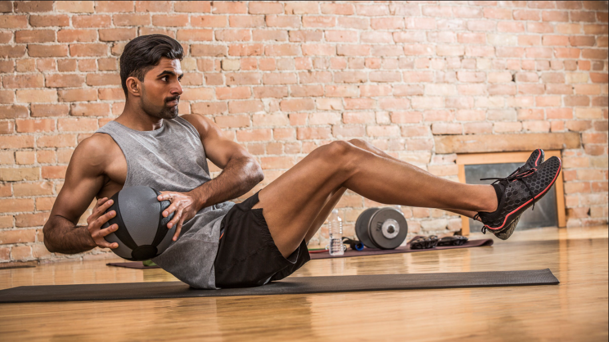
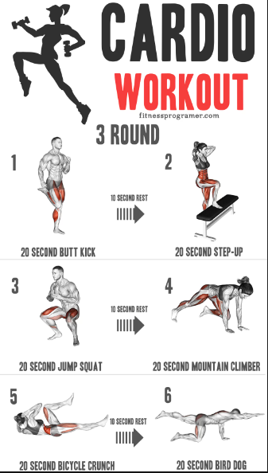
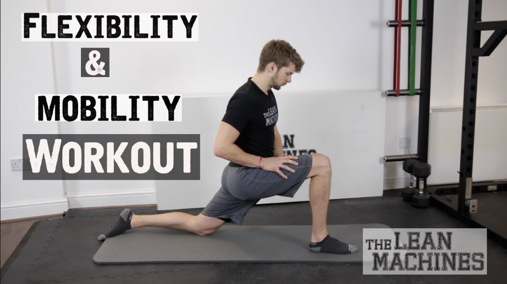
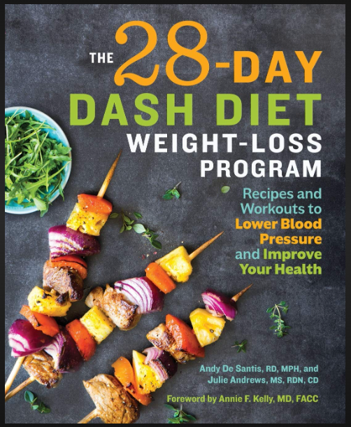

Strength Training Program:
- Focus: Increasing overall strength.
- Exercises: Squats, deadlifts, bench presses, overhead presses, rows.
- Reps and Sets: 3-5 sets of 5-8 reps, focusing on heavy weights.
Hypertrophy (Muscle Building) Program:
- Focus: Building muscle mass and definition.
- Exercises: Bicep curls, tricep extensions, leg presses, chest flies, lateral raises.
- Reps and Sets: 3-4 sets of 8-12 reps, moderate to heavy weights.

Endurance/Cardio Program:
- Focus: Improving cardiovascular health and stamina.
- Exercises: Running, cycling, rowing, jump rope, stair climbing.
- Duration: 20-60 minutes, moderate to high intensity, depending on fitness level.

Flexibility and Mobility Program:
- Focus: Enhancing flexibility, mobility, and reducing risk of injury.
- Exercises: Stretching, yoga, mobility drills, foam rolling.
- Duration: 15-30 minutes, focusing on various muscle groups.

Weight Loss Program:
- Focus: Burning calories and losing body fat.
- Exercises: Combination of strength training and cardio.
- Reps and Sets: Similar to strength or hypertrophy programs, with added emphasis on high-intensity intervals during cardio sessions.